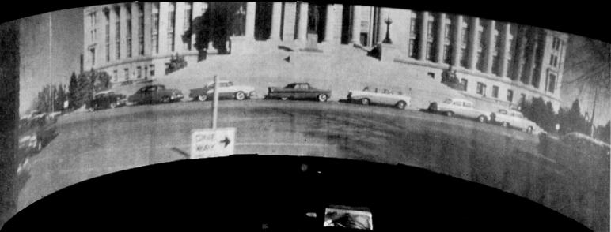
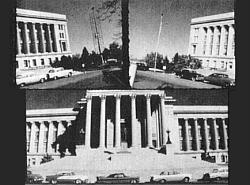

A 50's theater owner (Rowe Carney, Jr.) was impressed by This is CineRama, but CineRama was too expensive, so he partnered with a projectionist (Tom Smith) & made his own version, using mirrors to stack four images on a single frame of 35mm film. Video, from the Carney's son. And here's his website.
They called it RotoScope. Apparently, they hadn't heard of the Fleischer Brother's cartoon tracing method. It took about ten years to get it right. They started working in 1953, & had created a short travalog demonstration film by 1962. By then CineRama had lost its luster. Most widescreen movies were shot with anamorphic lenses or on 70mm film, or both. After a test presentation, RotoScope faded into obscurity.
Here's more info from the Missouri Historical Society: The Inventor was from Missouri.
And From Widescreen Museum: Where I 1st heard of it. He calls it the "Smith-Carney System."
Here's the patent: Kinda neat. It looks like there's some sort of special lens arangement to keep the bottom & top two images lined up.
Here's what it looks like on the screen:

Here's a frame of film:

Truthfully, I'm not sure how he got it to line up correctly:
Perhaps there's some overlap?
Pics taken from Widescreen Museum, for illustrative purposes. He got them from an old magazine. Should be fair use in either case.